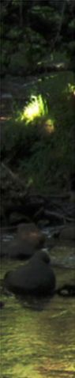

AREA DE USUARIOS
ID de Usuario:
Contraseña
UNIDADES DE TRABAJO
¡BIENVENIDOS A TODOFP!
FP
FP a distancia. Esta oferta está dirigida especialmente a aquellas personas que por diferentes razones (no solo laborales) no pueden cursar en los centros educativos y en el horario presencial, la Formación profesional. Por tanto, mayoritariamente será el colectivo de personas adultas el destinatario de esta modalidad de enseñanza. toda la información desde la web: FP online. ¡¡Matricúlate!!
Realizado por Jaime Todo FP | Educación
DIW04. HOJAS DE ESTILOS Oct. 10, 2011
*Orden EDU/2887/2010, de 2 de noviembre, por la que se establece el currículo del ciclo formativo de Grado Superior correspondiente al título de Técnico Superior en Desarrollo de Aplicaciones Web*
Webs de interés
